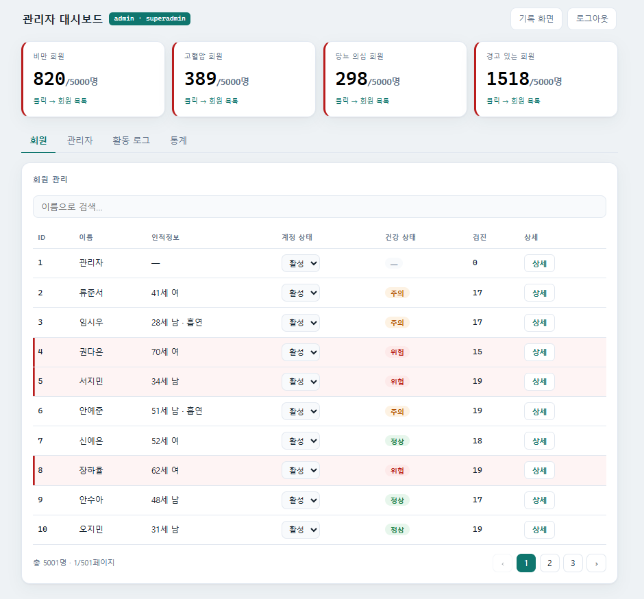
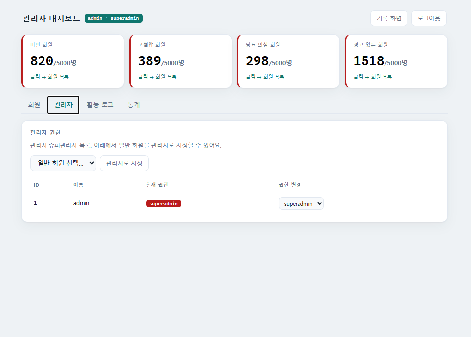
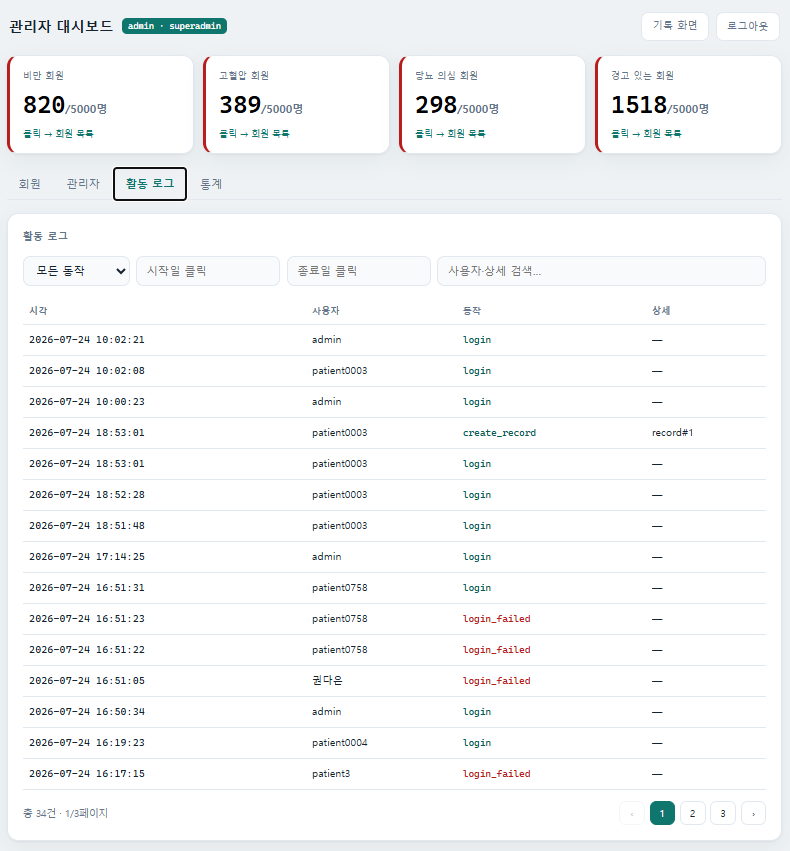
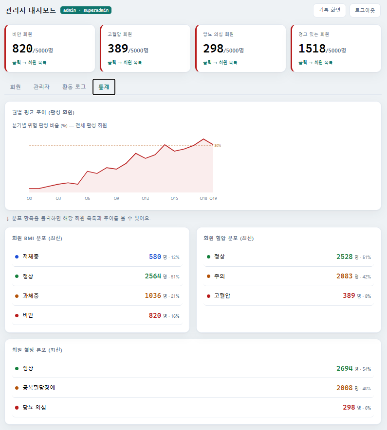
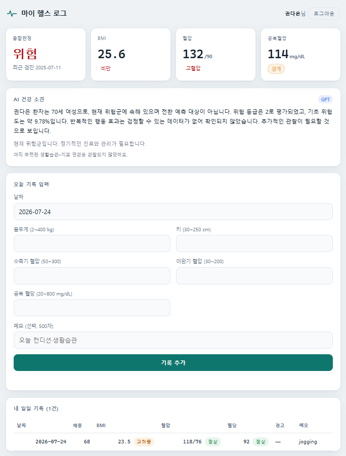
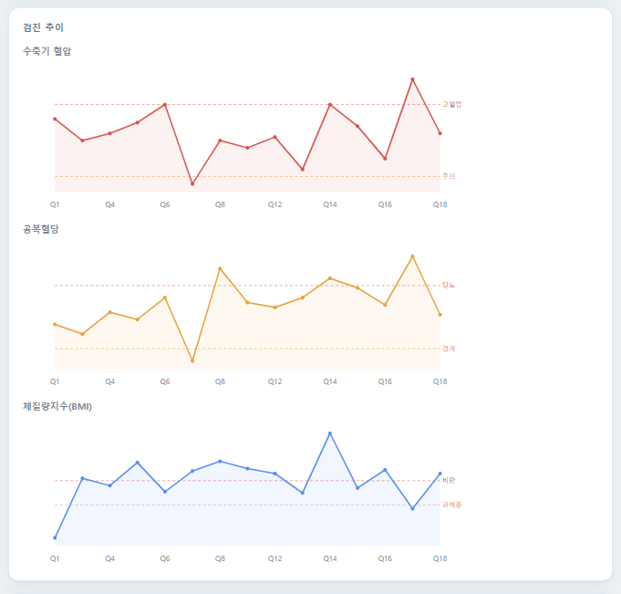
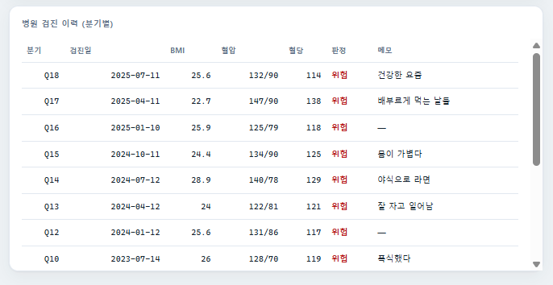

| 제출자 | ________________ (GitHub: jeonkooseong-hue) |
| 소속 / 반 | ________________ |
| GitHub | https://github.com/jeonkooseong-hue/health-log-api |
| 배포 URL | https://health-log.f30rczkmnnh6j.ap-northeast-2.cs.amazonlightsail.com/docs |
| 제출일 | 2026. 07. ____ |
개인은 /ui에서 자신의 검진 추이와 AI 소견을 보고, 관리자는 /dashboard에서
전체 회원의 위험군을 한눈에 관리한다. 단순 CRUD를 넘어, 실제 인구통계 기준으로 생성한
5,000명·9만 건의 검진 데이터 위에서 머신러닝 위험 예측 + 통계 검정 + LLM 소견을 결합했다.
| 구분 | 기능 |
|---|---|
| 기록 관리 (필수) | 건강 수치 CRUD · 날짜 검색 · 통계 · BMI 자동계산 · 혈압/혈당 분류 · 경고 생성 |
| 인증·권한 | 회원가입/로그인(JWT) · user / admin / superadmin 3단 권한 · 계정 상태(활성/휴면/탈퇴) |
| 관리자 대시보드 | 위험군 카드 · 회원/관리자/활동로그/통계 탭 · 회원 상세 · 위험군 드릴다운 |
| AI 위험 예측 | 학습된 로지스틱 모델이 "다음 분기 위험 전환 확률" 예측 (PR-AUC 0.535, 무작위의 5.5배) |
| 행동 인사이트 | 생활습관 메모–지표 효과를 Welch t-검정 + 다중비교 보정으로 유의한 것만 판정 |
| AI 소견 | 위 숫자를 GPT가 문장으로 서술 (판단 안 함, 유의 효과만 언급) |
Python 3.13FastAPIPydantic SQLAlchemy · SQLitePyJWT · bcrypt scikit-learn · pandasOpenAI GPT DockerAWS Lightsail
| 계층 | 구성 |
|---|---|
| API | FastAPI — 엔드포인트 · Pydantic 입력 검증(생리학적 범위 가드) · 건강 판정 로직 |
| 데이터 | SQLite 4테이블 (users · records · checkups · activity_logs), 파일 영속 |
| AI | ml.py(예측) · stats.py(통계 검정) · llm.py(소견), 학습 모델 joblib 로드 |
| 배포 | GitHub → Docker Hub → AWS Lightsail Container Service (서울 리전, HTTPS) |
※ 데이터 모델(ERD)은 docs/ERD.png, 전체 데이터·AI 흐름은 docs/PROCESS FLOW CHART.pdf 참고.







단순 규칙이 아니라, 세 단계가 각자 역할을 나눠 판단한다.
| 단계 | 담당 | 하는 일 | 검증 |
|---|---|---|---|
| 위험 확률 | ML (로지스틱) | 다음 분기 위험 전환 예측 | PR-AUC 0.535 (무작위의 5.5배) |
| 행동 효과 | 통계 (Welch t) | 메모–지표 인과의 유의성 | 95% 신뢰구간 + 다중비교 보정 |
| 소견 서술 | LLM (GPT) | 숫자를 문장으로 | 유의 효과만 언급, 없는 값 생성 금지 |
예: "권다은 환자는 70세 여성으로 현재 위험군… 위험 등급 2, 기초 위험도 9.78%" (실제 GPT 출력, 위 화면 캡쳐).
| 과제 요구 | 상태 |
|---|---|
| 7개 엔드포인트 (POST/GET/GET{id}/PUT/DELETE/search/stats) | 완료 |
| Pydantic 검증 · 파일 영속 · /docs · 무오류 실행 | 완료 |
| BMI·혈압·혈당 분류 + 경고 (명세 규격 그대로) | 완료 |
| Docker 빌드·실행 · GitHub Public · README | 완료 |
| [가점] 클라우드 배포 (AWS Lightsail 공인 URL) | 완료 |
| [확장] 주간 리포트 · 사용자 구분 · 관리 화면 · AI 예측 | 완료 |